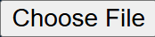
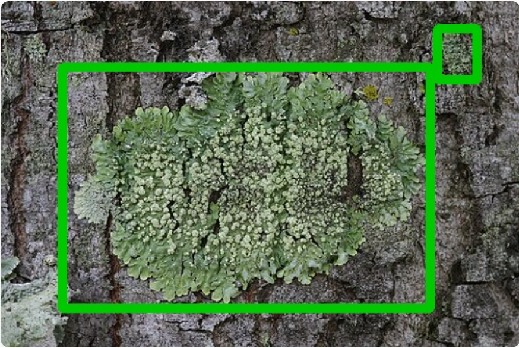
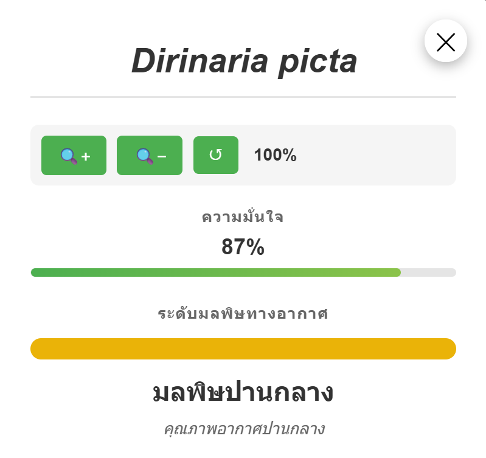

How to Use
English
ไทย
Step 1: Upload an Image
Click the "Choose File" button to select an image of lichen from your device.

Step 2: Predict
After selecting your image, click the green "Predict" button to start the detection.

Step 3: View Results
The system will display the image with colored bounding boxes around detected lichen species.

Step 4: Get Details
Click on any detected lichen (bounding box area) to see detailed information including:
- Species name
- Confidence level
- Air quality assessment

Bounding Box Colors
Each species is represented by a different color:
- Green - Dirinaria picta
- Yellow - Nigrovothelium tropicum
- Blue - Physcia undulata
- Red - Pyxine cocoes
- Purple - Trypethelium eluteriae
ขั้นตอนที่ 1: อัปโหลดรูปภาพ
คลิกปุ่ม "Choose File" เพื่อเลือกรูปภาพไลเคนจากอุปกรณ์ของคุณ

ขั้นตอนที่ 2: ทำนาย
หลังจากเลือกรูปภาพแล้ว ให้คลิกปุ่ม "Predict" สีเขียวเพื่อเริ่มการตรวจจับ
ขั้นตอนที่ 3: ดูผลลัพธ์
ระบบจะแสดงรูปภาพพร้อมกรอบสีรอบ ๆ ไลเคนที่ตรวจพบ

ขั้นตอนที่ 4: ดูรายละเอียด
คลิกที่ไลเคนที่ตรวจพบ (บริเวณกรอบ) เพื่อดูข้อมูลรายละเอียด ได้แก่:
- ชื่อสายพันธุ์
- ระดับความมั่นใจ
- การประเมินคุณภาพอากาศ

สีของกรอบแสดงชนิด
แต่ละสายพันธุ์จะแสดงด้วยสีที่แตกต่างกัน:
- สีเขียว - Dirinaria picta
- สีเหลือง - Nigrovothelium tropicum
- สีน้ำเงิน - Physcia undulata
- สีแดง - Pyxine cocoes
- สีม่วง - Trypethelium eluteriae